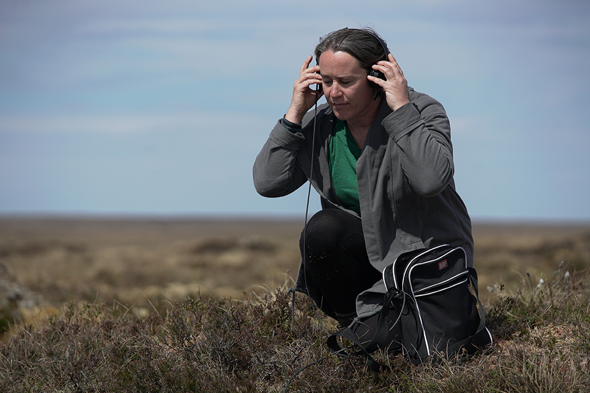
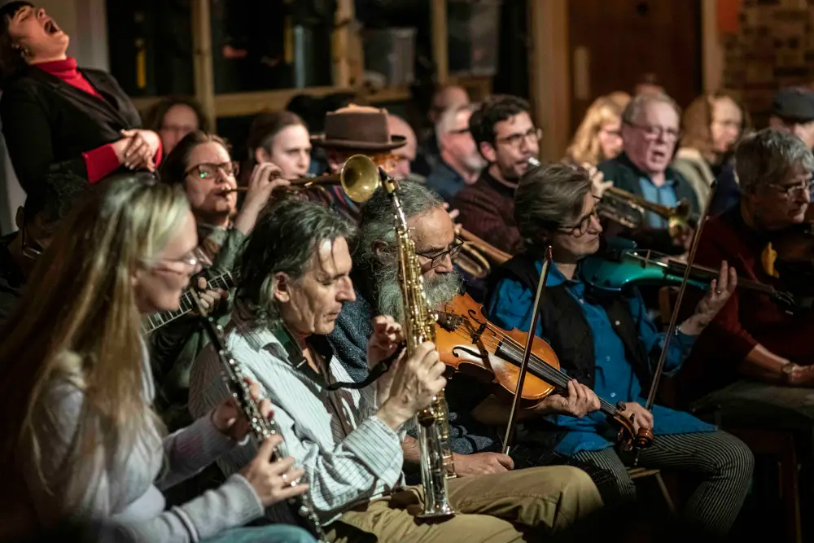
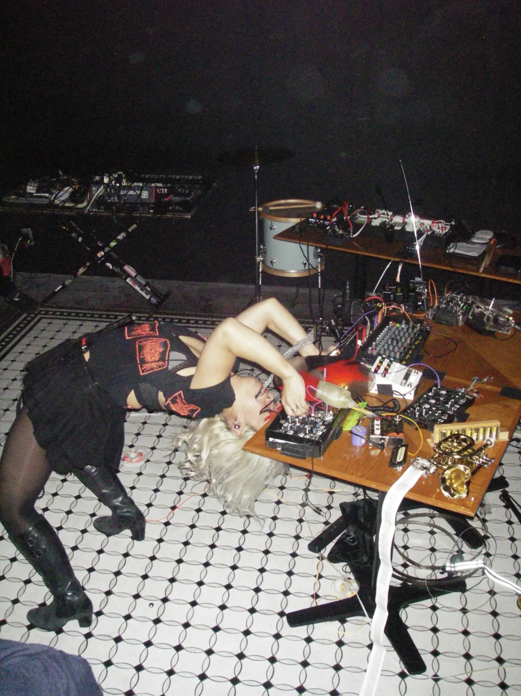

Keynotes
Georgina Born - Keynote Presentation
NIME Inside and Out: Critical Reflections from an AI Music Project
NIME has reached a kind of maturity signalled by repeated, if scattered, commentaries by insiders of its limits and politics. NIME, in this light, is a self-reflexive institution capable of probing its own socio-political borders and defined by a productive internal agonism. By the 2020s, NIME was being urged to embrace ‘the importance of a critical approach [that attends] to [NIME’s] structural foundations’ (Hayes and Marques-Borbon 2020), and to address its ‘outsides’, whether in terms of the difficulties of access and citation, cultural and linguistic marginalisation faced by Latin American participants (Avila et al 2022), or the need to develop ‘an outward-looking political agenda’ (Morreale et al 2020). NIME styles itself as a community –– but whose community? How is it defined musically, socially, politically –– and is that changing? These opening observations will haunt this lecture. But its main focus stems from a research programme called ‘Music and AI: Building Critical Interdisciplinary Studies’, which takes music as a lens through which to examine AI’s impacts on culture. I will reflect on key dimensions both of the scholarship on AI music and of the technologies, aiming to bring that ‘outside’ into NIME discourse. Certain key challenges recur in the AI music space – notably, the tendency for discussion to ‘center on technical objects rather than… questions of musicality’ (Hayes and Marques-Borbon, citing Green 2014). In the process I aim to enliven some key critical, conceptual and political orientations that NIME might enjoy, and need, to adopt and adapt.
About Georgina Born
Georgina Born is a Professor of Anthropology and Music at University College London. Earlier she had a professional life as a musician in experimental rock, jazz and improvised music. Her work combines ethnography with conceptual work on music and its social, technological and temporal mediation. Her books include Rationalizing Culture (1995), Western Music and Its Others (2000), Music, Sound and Space (2013), Interdisciplinarity (2013), Improvisation and Social Aesthetics (2017), and Music and Digital Media: A Planetary Anthropology (2022). Music and Genre: New Directions will be published by Duke in 2027. She has held the Bloch Professorship in Music, UC Berkeley (2014); the Schulich Distinguished Professorship in Music, McGill (2015); a Visiting Professorship in Arts, Humanities and Social Sciences, UC Irvine (2019-20, 2023-24); Professor II in Musicology, University of Oslo (2014-19); and has been Global Scholar in Music, Princeton University (2020-22). Awards include the RMA’s Dent Medal (2007), a Fellowship of the British Academy (2014), an OBE ‘for services to anthropology, musicology and higher education’ (2016), and the IMS’s Guido Adler Prize (2024). From 2021-26 she is directing an ERC-funded program called ‘Music and Artificial Intelligence: Building Critical Interdisciplinary Studies’, which, through music, researches the cultural implications of AI.
Kathy Hinde - Keynote Presentation

Kathy Hinde is an interdisciplinary artist whose practice embraces open methods and evolving processes. Composed of hand-made objects, electronics and a blend of digital and analogue systems, her work represents a cross between kinetic sound sculptures and newly invented instruments. Awards include an Ivor Novello Award for Sound Art, an Honorary Mention at Prix Ars Electronica, a British Composer Award in Sonic Art, an ORAM award, and a Scottish Award for New Music. Kathy is a member of Bristol Experimental Expanded Film (BEEF).
London Improviser’s Orchestra - Keynote Performance
London Improvisers Orchestra is dedicated to free and conducted large-group improvisation, and has been a core part of London’s experimental music landscape since 1998. Formed in the wake of Lawrence “Butch” Morris’s 1997 London Skyscraper tour, the ensemble evolved from a one-off project into a lasting collective with its own distinct identity.
At the heart of LIO is a powerful idea: combine complete improvisational freedom with real-time direction. Using conduction — a vocabulary of gestures and signals — the orchestra can move in an instant from texture to pulse, from chamber-like detail to full-band force. With personnel often ranging from around a dozen players to much larger line-ups, every performance becomes a one-off event shaped by who is in the room and how they listen to one another.
Over nearly three decades, LIO has built a remarkable long-form practice through regular monthly activity and residencies across London, including the Red Rose, Café OTO and later IKLECTIK. That continuity has created a rare intergenerational space where established and emerging improvisers can test new large-ensemble strategies, develop conduction approaches, and expand what an “orchestra” can be in the 21st century.
The group’s output is substantial: the orchestra has passed major milestones including 25 years of activity, accumulated well over 200 concerts, and documented its work across a significant discography — from early landmark releases such as Proceedings (recorded in 1999) to later recordings reflecting its IKLECTIK-era scale and breadth of personnel.
For audiences, a London Improvisers Orchestra concert offers something increasingly rare: orchestral scale with genuine unpredictability. Even at its most explosive, the music is built moment by moment through deep listening, collective risk-taking, and a shared commitment to invention in real time.

Evicshen - Keynote Performance
Victoria Shen (A.K.A. Evicshen) is a sound artist, experimental music performer, and instrument-maker based in San Francisco.
Shen’s sound practice is concerned with the spatiality/physicality of sound and its relationship to the human body. Her music features analog modular synthesizers, vinyl/resin records, and self-built electronics. Eschewing conventions in harmony and rhythm in favor of extreme textures and gestural tones, Shen uses what she calls “chaotic sound” to oppose signal and information, eluding traditionally embedded meaning.
Her personal identity; her body; is the space her work utilizes to restructure sonic meaning. In her live performances, she proposes an exploration between meaning and non-meaning through the physical activation of noise tropes. Her probing into these melodic voids interrogate the ways we perceive value within aural experiences. The appendage-like instruments and objects she makes, exemplify Shen’s ability to embody through sound her interest in the tension created by opposition: control and chaos, the unique and the mass produced, the practical and the absurd.
Shen’s multimedia practice extends beyond musical composition and performance to include installation and non-traditional methods of distribution. Her DIY approach to deconstructing the concepts of “materiality, value and mass production” both integrate and re-contextualize the formats of the readymade and assemblage techniques. For example, the album art for her debut LP, Hair Birth, utilizes copper to transform the cover into a loudspeaker through which the record can be played. In 2021, Shen produced a series of cut-up records in cast resin embedded with found materials, functioning not only as playable music media but as unique art objects. For recent performances, she pioneered the use of Needle Nails, acrylic nails with embedded turntable styluses, which allow her to play up to 5 tracks of a record at once. Needle Nails, Levitating speaker, and her Noise Combs are some of the objects created by her as part of an extensive repertoire of innovations in the design of sound augmentation. These sculptural elements invite the viewer to unpack one’s relationship with the material possibilities for creating sound.
Shen has performed solo across North America, Japan, China, Mexico, Australia/NZ, the UK, and Europe, as a member of the turntable trio with Mariam Rezaei and Maria Chavez, as a member of hip hop group 1 Above Minus Underground. Shen has also collaborated with Mix Master Mike of the Beastie Boys, Keiji Haino, the Kronos Quartet, Matmos, clipping, Acid Mothers Temple, and Mike Watt. Some notable venues in which she has performed include Boston City Hall, the Solomon R. Guggenheim Museum, ISSUE Project Room NY, DOMMUNE Tokyo, Petreon Sculpture Park Cyprus, MUNCH Museum Oslo, Art Gallery of NSW Sydney, and Museo d’Arte Orientale Turin. Shen has also been an artist in residence at Elektronmusikstudion EMS Stockholm SE, WORM Rotterdam NL, EMPAC Troy US, Yaddo Saratoga Springs US, Kurimanzutto New York US, The Royal Danish Academy Copenhagen DK, and AUDIUM San Francisco US, Bemis Center for Contemporary Arts Omaha US, and Headlands Center for the Arts Sausalito US, and Audio Foundation Auckland NZ.
Shen has taught at Center for Computer Research in Music and Acoustics Stanford, the Faculty of Arts and Sciences Harvard, and the School of Visual Arts NY. Shen is also a serving member of the Board of Directors for The Lab in San Francisco.

Dhangsha - Keynote Performance
Aniruddha Das is an electronic musician active at the intersection of bass culture and experimental noise. Under the moniker of Dhangsha (Bengali for ‘destruction’), he re-purposes the components of dance music to create turbulent soundscapes that resonate beyond the confines of a club.
His latest album “Insurrection Manual” on Brachliegen Tapes, demonstrates his propensity for bass/noise confrontation. His previous release “Broadcast Signal Intrusion” achieved eleventh position in The Wire’s Top 50 Albums of 2024.
He is featured on the vinyl “Disruptive Frequencies” on Nonclassical, an outcome of the AHRC funded project “Exploring Cultural Diversity In Experimental Sound,” initiated by Dr Amit Patel of University of Greenwich to investigate the paucity of Black and South Asian practitioners in experimental music in the UK.
Known for his visceral live sets, Aniruddha has performed throughout the UK and Europe, including at Cave12, Geneva and Industrial Coast, Middlesbrough. Festivals he has appeared at include “Electric Spring,” Huddersfield, “Supernormal and “Bone-Iklectik,” Barcelona.
Aniruddha also has a “non-metric noise” project DSPSSSSD (“dispossessed”) which was recently commissioned to compose a piece for Radiophrenia, Glasgow to be performed and broadcast live in September 2026.
He teaches in the Department of Electronic & Produced Music at Guildlhall School of Music, University of London.